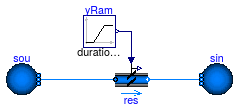
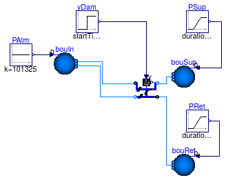

Collection of models that illustrate model use and test models
Information
This package contains examples for the use of models that can be found in
Buildings.Fluid.Actuators.Dampers.
Extends from Modelica.Icons.ExamplesPackage (Icon for packages containing runnable examples).
Package Content
| Name |
Description |
 Damper Damper
|
Damper with constant pressure difference and varying control signal |
| MixingBox
|
Mixing box with constant pressure difference and varying control signal |
| MixingBoxMinimumFlow
|
Mixing box with minimum flow rate, with constant pressure difference and varying control signal |
| VAVBoxExponential
|
VAV box with constant pressure difference and varying control signal |
Damper with constant pressure difference and varying control signal

Information
Test model for the air damper.
The air damper is connected to models for constant inlet and outlet
pressures. The control signal of the damper is a ramp.
Extends from Modelica.Icons.Example (Icon for runnable examples).
Modelica definition
model Damper
"Damper with constant pressure difference and varying control signal"
extends Modelica.Icons.Example;
package Medium =
Buildings.Media.Air;
Buildings.Fluid.Actuators.Dampers.Exponential res(
A=1,
redeclare package Medium = Medium,
m_flow_nominal=1,
filteredOpening=false);
Modelica.Blocks.Sources.Ramp yRam(
duration=0.3,
offset=0,
startTime=0.2,
height=1);
Buildings.Fluid.Sources.Boundary_pT sou(
redeclare package Medium
= Medium,
nPorts=1,
p(displayUnit="Pa") = 101335,
T=293.15);
Buildings.Fluid.Sources.Boundary_pT sin(
redeclare package Medium
= Medium,
nPorts=1,
p(displayUnit="Pa") = 101325,
T=293.15);
equation
connect(yRam.y, res.y);
connect(sou.ports[1], res.port_a);
connect(sin.ports[1], res.port_b);
end Damper;
Mixing box with constant pressure difference and varying control signal

Information
Test model for the economizer mixing box.
The economizer mixing box is exposed to time varying pressure boundary
conditions and input signals.
Extends from Modelica.Icons.Example (Icon for runnable examples).
Modelica definition
model MixingBox
"Mixing box with constant pressure difference and varying control signal"
extends Modelica.Icons.Example;
package Medium =
Buildings.Media.Air "Medium in the component";
Dampers.MixingBox mixBox(
AOut=0.7,
AExh=1,
ARec=1,
mOut_flow_nominal=1,
dpOut_nominal=20,
mRec_flow_nominal=1,
dpRec_nominal=20,
mExh_flow_nominal=1,
dpExh_nominal=20,
redeclare package Medium = Medium)
"mixing box";
Buildings.Fluid.Sources.Boundary_pT bouIn(
redeclare package
Medium = Medium, T=273.15 + 10,
use_p_in=true,
nPorts=2);
Buildings.Fluid.Sources.Boundary_pT bouSup(
redeclare package
Medium = Medium, T=273.15 + 26,
use_p_in=true,
nPorts=1);
Buildings.Fluid.Sources.Boundary_pT bouRet(
redeclare package
Medium = Medium, T=273.15 + 20,
use_p_in=true,
nPorts=1);
Modelica.Blocks.Sources.Constant PAtm(k=101325);
Modelica.Blocks.Sources.Ramp PSup(
offset=101320,
height=-10,
startTime=0,
duration=20);
Modelica.Blocks.Sources.Ramp PRet(
height=10,
offset=101330,
duration=20,
startTime=20);
Modelica.Blocks.Sources.Step yDam(
height=1,
offset=0,
startTime=60);
equation
connect(yDam.y, mixBox.y);
connect(bouIn.p_in, PAtm.y);
connect(PRet.y, bouRet.p_in);
connect(bouSup.p_in, PSup.y);
connect(bouIn.ports[1], mixBox.port_Out);
connect(bouIn.ports[2], mixBox.port_Exh);
connect(bouSup.ports[1], mixBox.port_Sup);
connect(bouRet.ports[1], mixBox.port_Ret);
end MixingBox;
Mixing box with minimum flow rate, with constant pressure difference and varying control signal

Information
Test model for the economizer mixing box that has a flow leg for the
minimum outside air intake.
The economizer mixing box is exposed to time varying pressure boundary
conditions and input signals.
Extends from Modelica.Icons.Example (Icon for runnable examples).
Modelica definition
model MixingBoxMinimumFlow
"Mixing box with minimum flow rate, with constant pressure difference and varying control signal"
extends Modelica.Icons.Example;
package Medium =
Buildings.Media.Air "Medium in the component";
Buildings.Fluid.Actuators.Dampers.MixingBoxMinimumFlow mixBox(
AOutMin=0.3,
AOut=0.7,
AExh=1,
ARec=1,
mOutMin_flow_nominal=0.3,
dpOutMin_nominal=20,
mOut_flow_nominal=1,
dpOut_nominal=20,
mRec_flow_nominal=1,
dpRec_nominal=20,
mExh_flow_nominal=1,
dpExh_nominal=20,
redeclare package Medium = Medium)
"mixing box";
Buildings.Fluid.Sources.Boundary_pT bouIn(
redeclare package
Medium = Medium, T=273.15 + 10,
use_p_in=true,
nPorts=3);
Buildings.Fluid.Sources.Boundary_pT bouSup(
redeclare package
Medium = Medium, T=273.15 + 26,
use_p_in=true,
nPorts=1);
Buildings.Fluid.Sources.Boundary_pT bouRet(
redeclare package
Medium = Medium, T=273.15 + 20,
use_p_in=true,
nPorts=1);
Modelica.Blocks.Sources.Constant PAtm(k=101325);
Modelica.Blocks.Sources.Constant yDamMin(k=0.5);
Modelica.Blocks.Sources.Ramp PSup(
offset=101320,
height=-10,
startTime=0,
duration=20);
Modelica.Blocks.Sources.Ramp PRet(
height=10,
offset=101330,
duration=20,
startTime=20);
Modelica.Blocks.Sources.Step yDam(
height=0.1,
offset=0.45,
startTime=60);
equation
connect(yDamMin.y, mixBox.yOutMin);
connect(yDam.y, mixBox.y);
connect(bouIn.p_in, PAtm.y);
connect(PRet.y, bouRet.p_in);
connect(bouSup.p_in, PSup.y);
connect(bouIn.ports[1], mixBox.port_OutMin);
connect(bouIn.ports[2], mixBox.port_Out);
connect(bouIn.ports[3], mixBox.port_Exh);
connect(bouSup.ports[1], mixBox.port_Sup);
connect(bouRet.ports[1], mixBox.port_Ret);
end MixingBoxMinimumFlow;
VAV box with constant pressure difference and varying control signal

Information
Test model for the variable air volume flow box.
The model has two flow legs, both are connected to models for constant inlet and outlet
pressures.
The top flow leg has a flow resistance and an air damper, and
the bottom flow leg combines both of these resistances into one model.
Both flow legs have identical mass flow rates, except at very small
flow rates. The reason for this difference is that the equations
are regularized for numerical reasons, and combining the two components
within one component leads to a slightly different equation for the
regularization.
Extends from Modelica.Icons.Example (Icon for runnable examples).
Modelica definition
model VAVBoxExponential
"VAV box with constant pressure difference and varying control signal"
extends Modelica.Icons.Example;
package Medium =
Buildings.Media.Air;
Buildings.Fluid.Actuators.Dampers.Exponential dam(
redeclare package Medium = Medium, A=1.8,
m_flow_nominal=2);
Modelica.Blocks.Sources.Step yDam(
height=-1,
offset=1,
startTime=60);
Modelica.Blocks.Sources.Ramp P(
height=-10,
offset=101330,
startTime=0,
duration=60);
Buildings.Fluid.Sources.Boundary_pT sou(
redeclare package Medium
= Medium, T=273.15 + 20,
nPorts=2,
use_p_in=true);
Buildings.Fluid.Sources.Boundary_pT sin(
redeclare package Medium
= Medium, T=273.15 + 20,
nPorts=2,
use_p_in=true);
Modelica.Blocks.Sources.Constant PAtm(k=101325);
Buildings.Fluid.Actuators.Dampers.VAVBoxExponential vav(
redeclare package Medium = Medium,
dp_nominal=5,
A=1.8,
m_flow_nominal=2);
Buildings.Fluid.FixedResistances.FixedResistanceDpM res(
from_dp=true,
m_flow_nominal=2,
redeclare package Medium = Medium,
dp_nominal=5 - 0.45*2^2/1.2/1.8^2/2);
equation
connect(yDam.y,dam. y);
connect(P.y, sou.p_in);
connect(PAtm.y, sin.p_in);
connect(yDam.y, vav.y);
connect(res.port_b, dam.port_a);
connect(sou.ports[1], res.port_a);
connect(sou.ports[2], vav.port_a);
connect(dam.port_b, sin.ports[1]);
connect(sin.ports[2], vav.port_b);
end VAVBoxExponential;
Automatically generated Mon Jul 13 14:23:48 2015.
 Buildings.Fluid.Actuators.Dampers.Examples.Damper
Buildings.Fluid.Actuators.Dampers.Examples.Damper